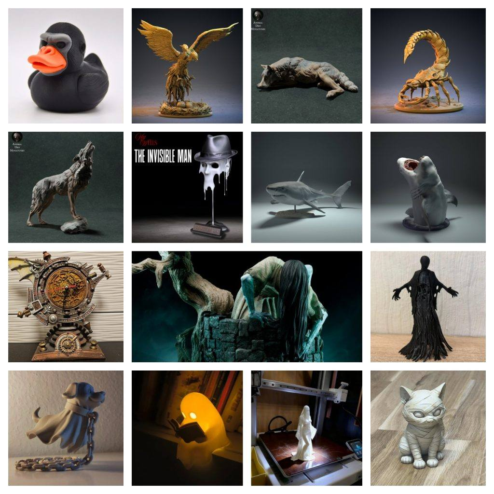

模型分享
2025年10月12日STl图纸文件分享

大家好！本次带来的STL合集仿佛打开了一个百宝箱，里面既有来自传说与噩梦的暗黑生物，也有可爱呆萌的桌面伙伴，更有创意十足的实用物件。无论您是想营造万圣节氛围，还是为桌面增添一份独特趣味，这份清单都能满足您。
模型清单与简介：
- 1. 暗黑魅影组合：摄魂怪、幽灵狗、幽灵女孩、幽灵阅读器
- 简介： 这组模型是营造神秘与惊悚氛围的绝佳选择。摄魂怪漂浮的破败袍子带来十足的压迫感；幽灵狗和幽灵女孩则在诡异中透着一丝温情，非常适合制作故事感场景；而幽灵阅读者那静谧的姿态，为恐怖增添了一份文艺与哲思。
- 2. 奇幻生物集：猎物布、双头神鸟洛克、星星鸭子、沙行者、狼与睡觉狼
- 简介： 这里集合了想象力的结晶！猎物布可能是一只造型奇特的幻想生物；双头神鸟洛克散发着古老神话的气息；星星鸭子和沙行者则充满了原创的奇幻色彩。尤为值得一提的是狼与睡觉狼的组合，一动一静，完美展现了这种生物的威严与安宁，非常适合并列展示。
- 3. 创意与经典造型：蒸汽朋克钟表、贞子、隐形人面具
- 简介： 这组模型兼具实用、恐怖与趣味。蒸汽朋克钟表是一个绝妙的功能性装饰，齿轮、管道和复古设计能让任何桌面瞬间提升格调。经典的贞子从井口爬出的模型，是恐怖电影迷的终极收藏。而隐形人面具则是一个充满创意的打印品，它能带来强烈的戏剧效果，是派对的焦点。
打印与展示建议：
- 氛围营造： 打印“暗黑魅影”系列时，建议使用灰色或半透明材料，搭配暗色灯光，能营造出最佳的幽灵效果。
- 表面处理： “蒸汽朋克钟表”打印后，进行适当的旧化涂装（如干扫青铜色、黑洗），能极大增强其质感。
- 趣味互动： “隐形人面具”可以尝试使用有弹性的TPU材料打印，或者将其作为基础，用其他材料（如布料）进行再创作，乐趣无穷。
希望这组从黑暗到光明、从恐怖到温馨的模型能给您带来不一样的打印灵感。祝您打印愉快！
链接: https://pan.baidu.com/s/1d9DkHyl9V09BzfKclb-udw?pwd=x4fj 提取码: x4fj
以上内容仅供个人使用（非商用）
ONLY for PERSONAL (NON-COMMERCIAL) use.
加群获得更多免费模型！